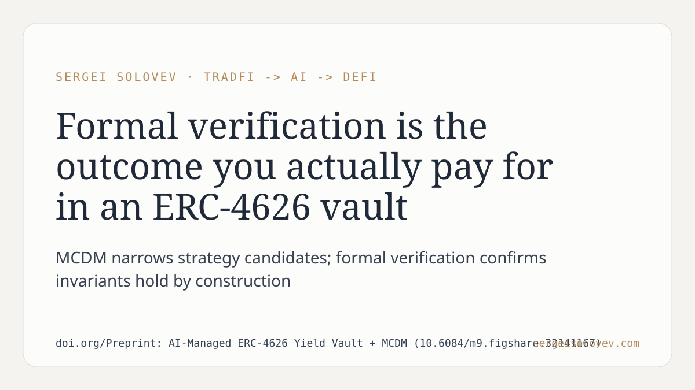

Most ERC-4626 vault implementations treat formal verification as a post-deployment concern, something to revisit after the yield strategy is already running. That framing gets the causality backwards.
The paper investigates how multi-criteria decision-making can structure yield strategy selection in an AI-managed ERC-4626 vault, and how formal verification serves as the closing step that turns a ranked candidate strategy into one you can actually trust with on-chain capital. The key point is that MCDM narrows the decision space on quantifiable criteria, while formal verification confirms that the selected strategy's invariants hold by construction — not just in simulation.
In practice, this matters because a strategy that backtests well but lacks formal guarantees is a liability disguised as a return. Any logic error in vault accounting is immediate and irreversible. The combination of structured selection and formal verification shifts the trust argument from "this performed well historically" to "the contract cannot violate its own specification."
This workflow is standard in safety-critical engineering. In DeFi it remains underused, which is a tractable problem rather than an inherent one. The paper is a concrete attempt to close that gap.
Full paper: https://doi.org/10.6084/m9.figshare.32141167
#DeFi #SmartContracts #AIagents